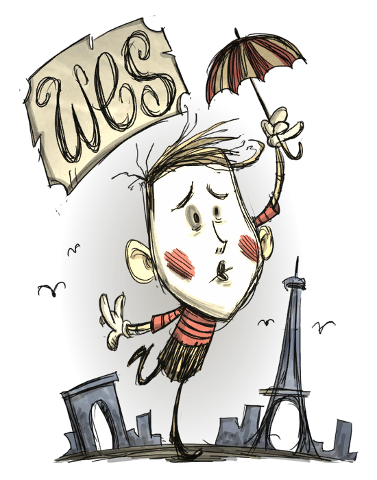

113 150 113
Wes所拥有的生命,饱食度上限和理智都是较低的, 同时亦都比正常的角色下降得更快. 作为默剧演员的他不会说话, 实际上, 他只会做出一些随机的动作, 这些动作并没有任何实质意义。Wes 的特殊能力是他会在开始时持有无限制的气球。可以透过消耗5点理智值来做出一个气球. 它没有使用次数限制. 当气球受到攻击时, 它可以对怪物做成5点伤害. 汽球可以引爆另一个气球, 所以你可以做出多个气球来做成连锁引爆. 气球亦可以用来吸引怪物和在Rofg版本中的狸猫。
在冒险模式中第三个世界有Wes被两个Maxwell雕像锁住的地方，打破雕像并且击败所有出现的发条骑士和发条主教就能解锁Wes还有Wes只有150的精神，112的血量和112的饥饿值，而且消耗饥饿值的速度是其他角色的1.25倍，近战伤害也只有普通角色的0.75倍，执行每个动作有1%的死亡几率,这，我还能说什么...